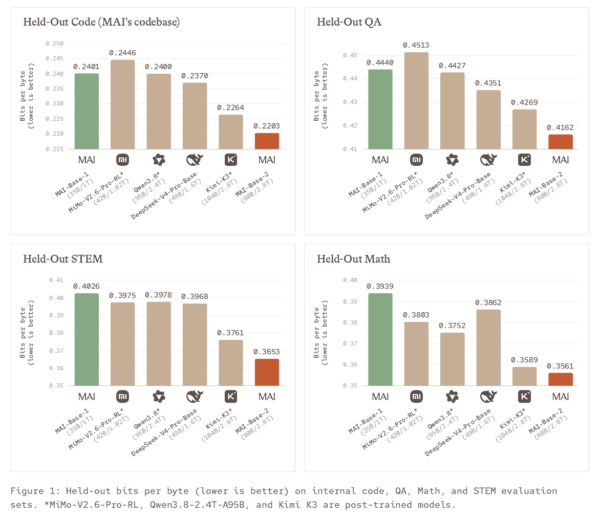
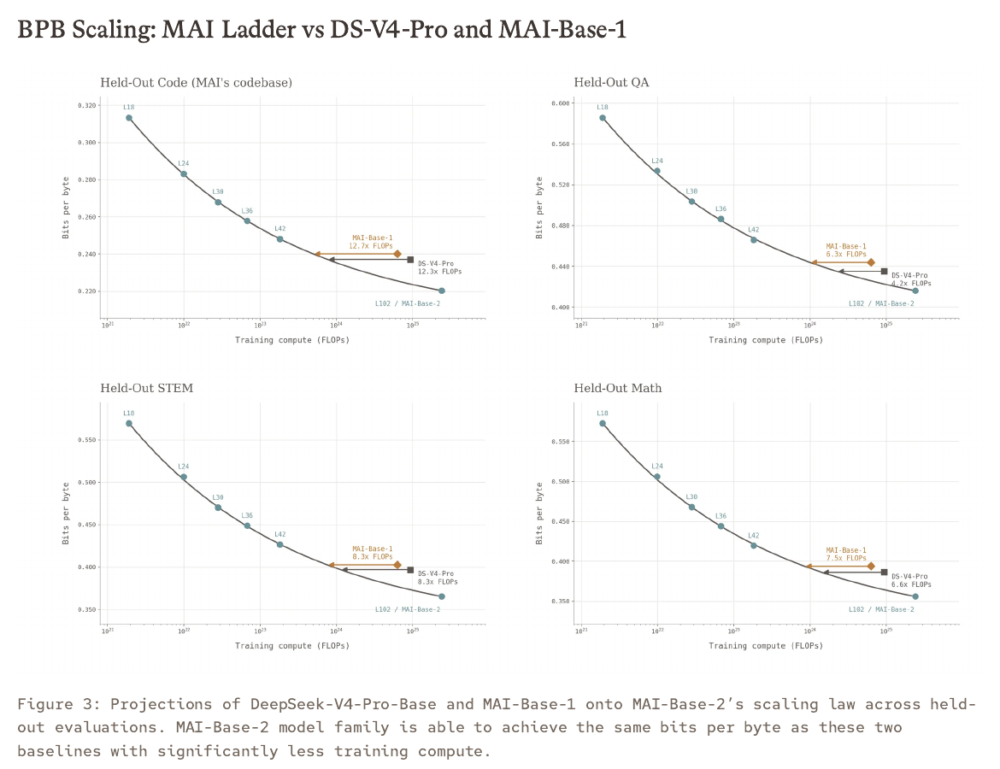

마이크로소프트, 자체 대형 AI를 키웠다
마이크로소프트가 10월 15일 자체 대형 AI MAI-Base-2의 사전학습을 마쳤다고 발표했다. 모델의 기초 능력을 만드는 훈련을 끝냈다는 소식이다. 사용자 지시와 실제 작업에 맞게 다듬는 후속 학습은 진행 중이며, 이번 발표는 일반 사용자가 선택할 새 챗봇의 출시 안내와 구분해야 한다. 공식 연구 발표

눈에 띄는 점은 회사가 다른 모델을 서비스에 연결하는 데 그치지 않고, 자기 모델의 학습 방법과 기반 시설을 함께 확장하고 있다는 것이다. 완성된 앱 화면보다 그 앱 안에 들어갈 기반 기술의 진전으로 읽으면 이번 소식의 의미가 분명해진다.
기초를 배우는 단계와 사용자를 돕는 단계를 나눈다
사전학습은 많은 자료에서 언어와 패턴을 배우는 단계다. 이후에는 질문에 맞게 답하고, 여러 조건을 지키며, 필요한 도구를 이용하도록 다듬는 과정이 이어진다. 기초 성적이 좋은 것과 실제 업무 요청을 끝까지 잘 수행하는 것은 관련이 있지만 같은 시험은 아니다.
마이크로소프트가 앞서 공개한 MAI-Thinking-1 안내를 보면 그 차이가 드러난다. 이 모델에는 추론·코딩 작업을 위한 후속 학습과 지시 따르기, 도구 호출 같은 기능이 소개돼 있다. 기존 모델의 이러한 제품 기능을 새 Base-2가 지금 모두 제공한다고 옮겨 쓰면 두 발표가 섞인다.
예를 들어 직원이 “이 보고서를 요약하고 빠진 숫자를 확인해 줘”라고 부탁하는 장면에는 읽기 능력만 필요한 것이 아니다. 원본을 찾아 열고, 표와 본문을 대조하고, 확인하지 못한 내용을 구분해 알려 주는 행동도 필요하다. 새 기반 모델의 실용성은 이런 후속 시험을 통해 더 구체적으로 드러날 것이다.


전체 2조8천억과 활성 800억의 차이
회사가 밝힌 규모는 전체 2조8천억 개, 계산에 활성화되는 부분은 800억 개의 매개변수다. 매개변수는 모델이 학습하면서 조정한 숫자다. 입력에 따라 일부 부분을 골라 쓰는 MoE 구조여서 전체 크기와 한 번의 계산에 참여하는 크기가 다르다. 공식 보고서의 모델 구성표
여러 전문팀을 두고 질문에 맞는 팀을 고른다고 생각하면 구조를 이해하기 쉽다. 다만 선택된 팀만 계산한다고 해서 나머지 팀의 정보를 보관할 필요까지 사라지는 것은 아니다. 활성 매개변수 숫자만 보고 보통 노트북에서 실행할 수 있다고 판단할 수 없는 이유다.
모델 크기는 중요한 설계 정보지만, 숫자가 커질수록 모든 능력이 같은 비율로 좋아지는 공식은 없다. 학습 자료와 방법, 실행 설정, 평가할 작업도 함께 달라진다. 제품을 고르는 사람에게는 규모 자체보다 자기 업무의 결과와 시간, 이용 비용이 더 직접적인 판단 자료가 된다.
4~12배는 답변 실력의 배수가 아니다
발표에서 강조한 약 4~12배는 특정 비교 성적에 도달하는 데 필요한 사전학습 계산량의 효율이다. 마이크로소프트는 DeepSeek-V4-Pro-Base를 기준으로 같은 평가 수준에 이르는 계산량을 추정했다. “답변이 12배 똑똑하다”거나 “실제 학습비가 12분의 1이었다”는 뜻으로 바꿀 수 없다.
이 차이는 훈련법이 좋아진 운동선수에 비유할 수 있다. 같은 기록에 도달하는 연습량을 줄였다는 주장과, 최종 대회 기록이 몇 배 빨라졌다는 주장은 서로 다르다. 마찬가지로 계산량의 효율 개선과 완성 모델의 종합 성능은 따로 설명해야 한다.
비용도 계산 횟수만으로 정해지지 않는다. 장비 가격, 가동 시간, 전력, 데이터 준비와 운영 인력이 함께 들어간다. 이번 발표의 계산 효율 수치를 이용자의 구독료나 API 가격 할인으로 연결하면 아직 발표되지 않은 결론이 된다.
성적표는 항목과 비교 조건부터 읽는다
보고서 첫 페이지의 그래프는 따로 남겨 둔 코드·질의응답·수학·과학 자료에서의 예측 지표를 보여 준다. 낮을수록 좋은 점수이며, 회사가 수행한 평가다. 비교 모델 가운데에는 이미 후속 학습을 거친 모델도 있어 조건 차이가 있다는 주석이 붙는다.
따라서 이 그래프를 읽을 때는 “막대가 가장 낮다”에서 멈추지 말아야 한다. 어떤 자료를 썼는지, 무엇을 점수로 삼았는지, 다른 모델은 어떤 단계인지까지 함께 봐야 한다. 일반 사용자의 만족도 투표나 실제 코딩 업무의 성공률과 같은 종류의 성적표는 아니다.
예측 지표가 개선되면 앞으로의 모델을 더 좋게 만들 기반이 될 수 있다. 그러나 한국어 설명의 자연스러움, 긴 문서의 사실 확인, 반복 수정 요청의 정확성은 해당 작업을 따로 해 봐야 알 수 있다. 이번 기사에서는 MAI-Base-2를 직접 사용하거나 비교 실험하지 않았다.
자체 모델을 키우는 일이 회사에 갖는 의미
새 모델이 실제 서비스로 이어지면 마이크로소프트는 학습 자료부터 운영 방식까지 자사가 조정할 수 있는 선택지를 늘리게 된다. 이는 발표를 바탕으로 한 해석이다. 특정 외부 업체와의 협력이 끝난다거나 기존 제품의 모델이 즉시 교체된다고 단정할 근거는 이번 문서에 없다.
기업 고객 입장에서 중요한 질문도 이 단계에서 달라진다. 단순히 “몇 점을 받았나”뿐 아니라 자료 처리 조건은 무엇인지, 어떤 환경에 배포할 수 있는지, 오류가 생겼을 때 어떻게 추적하는지를 확인하게 된다. 이런 도입 조건은 성능 그래프 하나로 대신할 수 없다.
기존 MAI-Thinking-1 공개 문서는 Foundry에서의 시험 제공을 안내한다. 그 경로를 보았다고 해서 Base-2도 같은 이름으로 바로 쓸 수 있다고 생각해서는 안 된다. 같은 회사의 모델이어도 개발 단계, 제공 대상과 이용 조건은 각각 확인해야 한다.
지금 볼 것은 실제 연구 그래프, 다음에 볼 것은 제품 시험
공식 보고서의 첫 번째 성능 그래프와 다섯 번째 페이지의 계산 효율 그래프는 서로 다른 질문에 답한다. 하나는 시험 점수, 다른 하나는 일정 점수에 도달하는 데 드는 계산량이다. 같은 “성능”이라는 말로 묶으면 시청자가 배수를 잘못 이해하기 쉽다.
공개 사용 경로가 마련되면 동일한 한국어 보고서와 표를 다른 모델에도 주고 비교할 수 있다. 핵심 숫자를 빠뜨리지 않는지, 근거가 없는 결론을 보태는지, 오류를 알려 주었을 때 제대로 수정하는지가 실제 업무에 가까운 시험이다. 이는 향후 검증 제안이며 이미 얻은 결과가 아니다.
현재 확인할 수 있는 핵심은 마이크로소프트의 자체 모델 개발 규모가 커졌고, 회사가 그 학습 방법과 평가 근거를 공개했다는 점이다. 일반 사용자가 체감할 변화는 후속 모델의 공개와 실제 제품 시험에서 확인해야 한다. 연구 발표의 의미를 인정하면서도 이용 가능 여부는 별도로 보는 것이 정확하다.
출처와 더 읽을 자료
- MAI-Base-2 공식 연구 발표
- 공식 연구 보고서 PDF·성능 및 계산 효율 그래프
- 이전 MAI-Thinking-1 제품 발표·후속 학습과 제공 범위
- 이전 모델 MAI-Thinking-1 기술 보고서
대표 이미지는 제품명과 기사의 핵심을 편집부가 배치한 설명용 표지이며 실제 제품 화면이 아니다. 본문의 원본 화면·영상은 각 자료 아래에 출처와 제공 주체를 표시했다. 직접 실습하지 않은 회사 시연을 편집부의 실행 결과로 표시하지 않았다.